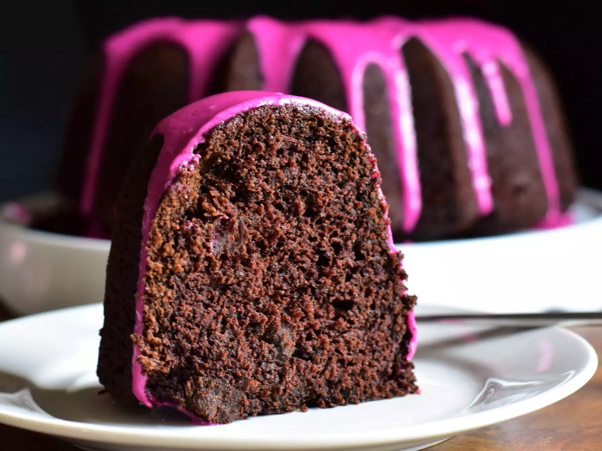

Chocolate Beet Cake

Chocolate Beet Cake with Beet-Vanilla Glaze Recipe
Having an overabundance of beets from my garden, I decided to try something a bit different. The end result was this chocolaty cake with a vibrant pink icing.
Ingredients
Cake:
- baking spray with flour
- 1 ¾ cups all-purpose flour
- 1 cup unsweetened cocoa powder
- 2 teaspoons baking soda
- 1 teaspoon baking powder
- ½ teaspoon salt
- 4 large eggs, separated, at room temperature
- 1 cup firmly packed brown sugar
- 1 cup white sugar
- ½ cup unsalted butter, at room temperature
- ¼ cup vegetable oil
- 1 ¼ cups pureed cooked beets
- 1 tablespoon vanilla extract
- 1 cup buttermilk, at room temperature
- 1 ½ cups chocolate chips
Glaze:
- 1 cup powdered sugar
- 2 tablespoons heavy cream
- 2 teaspoons pureed cooked beets
- 1 teaspoon vanilla extract
- 1 pinch salt
Steps
- Preheat oven to 350 degrees F (175 degrees C). Grease a 10 cup Bundt pan with a baking spray containing flour.
- Sift together flour, cocoa powder, baking soda, baking powder, and salt into a bowl.
- Separate eggs. Place egg whites into a bowl, and whip on high speed until stiff peaks form. Set aside.
- Cream together brown sugar, white sugar, butter, and oil in a large bowl with an electric mixer for 2 to 3 minutes. Add egg yolks and beat for another 3 minutes. Mix in beet puree and vanilla. Add in half of the sifted flour mixture, and mix until just combined. Pour in buttermilk and mix until just combined. Add in remaining flour mixture and mix until just combined. Fold in chocolate chips.
- Add 1/3 of whipped egg whites to the cake batter, and gently fold to combine. Add in remaining egg whites, and gently fold just until no streaks of egg white remain. Pour batter into the prepared pan and gently smooth top into an even layer.
- Bake in the preheated oven until top of cake springs back lightly when touched (or until a bamboo skewer inserted into the center of the cake comes out with a few moist crumbs), 50 to 55 minutes. Allow cake to cool in the pan for 20 minutes before gently running a knife around the edges of the cake to loosen. Invert cake onto a wire rack, and cool completely.
- To make the glaze combine powdered sugar, heavy cream, beet puree, vanilla extract, and salt in a bowl. Whisk until smooth. If glaze is too thick, add more heavy cream; if glaze is too thin, add more powdered sugar until desired consistency is reached. Drizzle glaze over cooled cake.